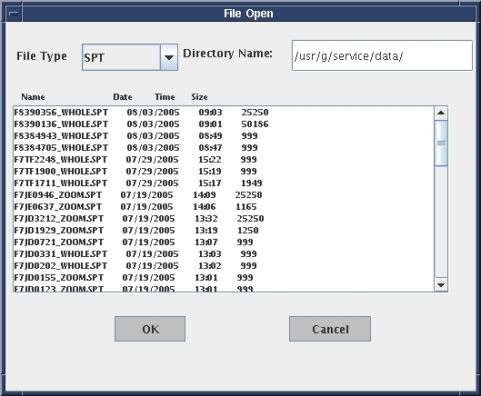
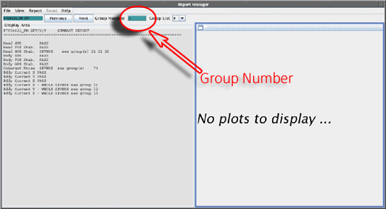
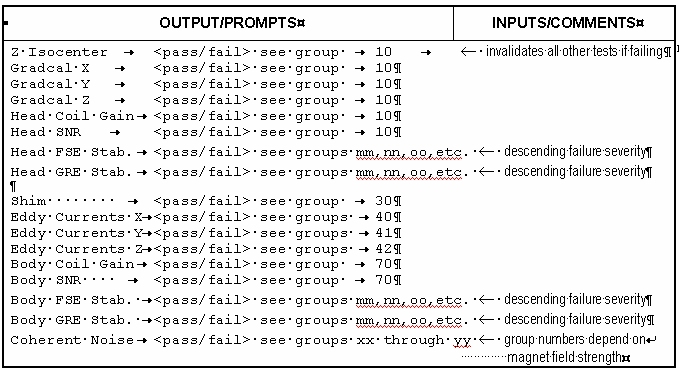

Proprietary to General Electric Company
Direction 5440000, Rev# 5
Signa HDxt Service Methods
Module Version 1.0, Version Date 5/15/07
Proprietary to General Electric Company |
| NOTE: | The result file is constructed to be compatible with existing report tools. |
The Result File organization can be found on the /usr/g/service/data directory. These files may be viewed in the Report manager as shown in Illustration 1.
Illustration 1: Opening the file and viewing the various groups

The group numbers are selected by typing the group number as shown in Illustration 2 and pressing <Enter>.
Illustration 2: group numbers

The result file is constructed to be compatible with existing report tools.
This contains the customary file header, although it has significantly reduced content compared with older tools such as TLT and SST. SPT data are the result of many scans in multiple coils and, therefore, it would be meaningless to include scan-specific information in the header for the entire result file. Scan-specific data such as prescan and coil information are included with individual test results as needed.
These groups may be used to display off-line interpretation of SPT results in future releases.
Group 9 contains a summary report showing pass/fail status of all tests that were run. Only the four worst failing stability groups for each coil are identified, in order of descending severity.
The summary report group is completely formatted by the process that creates it, and is designed for human interpretation only. This means that an off-site process is not expected to store the information in a database as discrete values, but only as a paragraph. Illustration 3 shows the summary report format.
Illustration 3: Summary Report Format

In addition to collecting and processing data, and reporting test results like other advanced service tools, SPT also evaluates test results against acceptance criteria, and reports the conclusions of that evaluation. Some parameters are also used to update calibration entries in the system configuration file if it is determined that an adjustment is needed, and the user has authorized automatic configuration file updates during the startup of SPT.